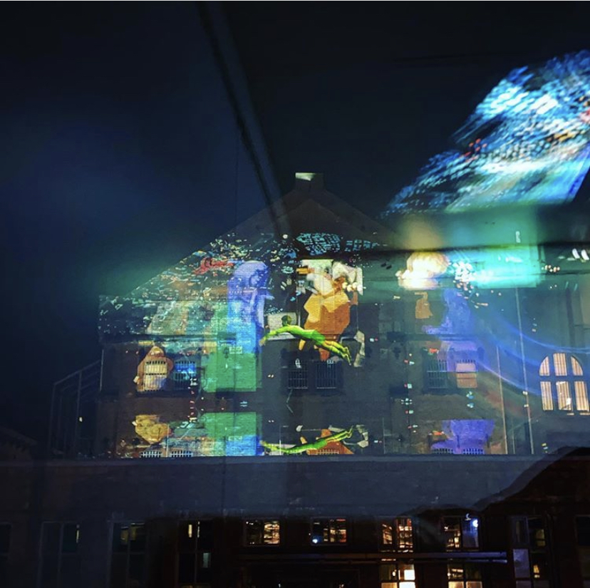
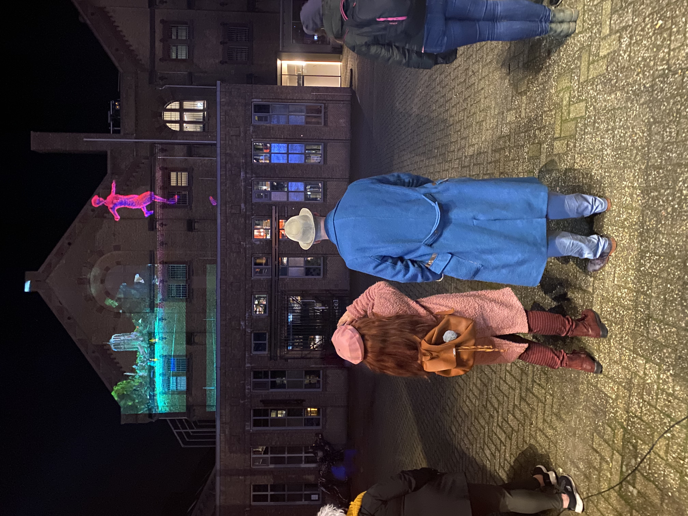
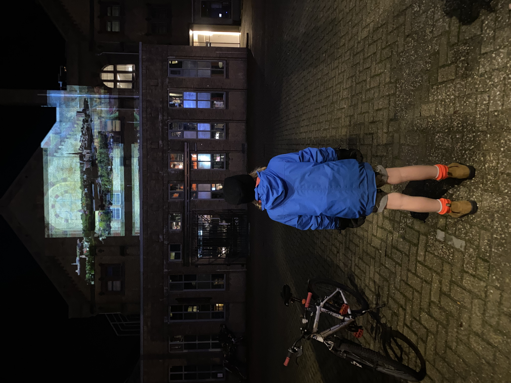
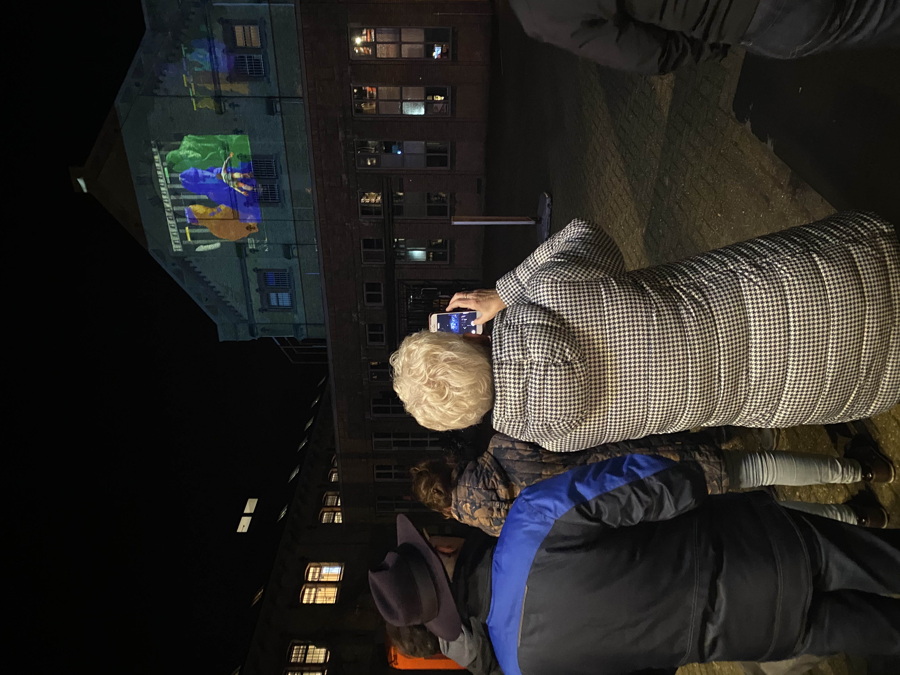
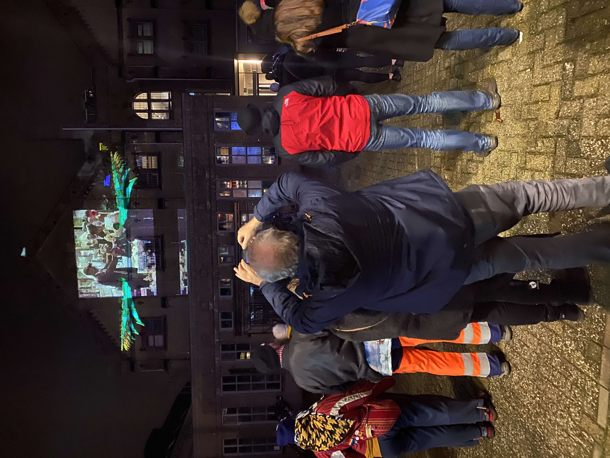
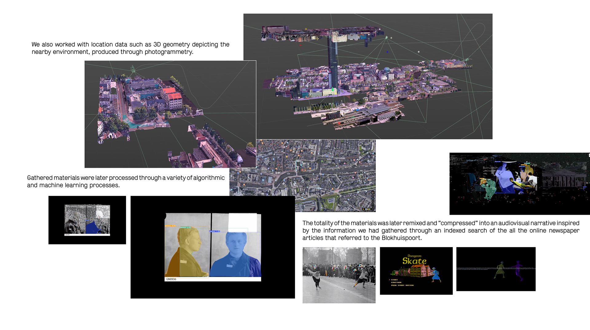
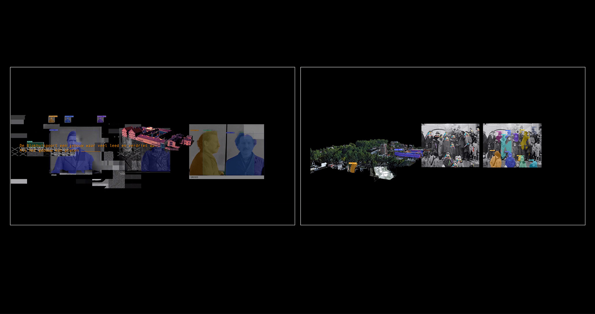

05 — AI · Projection Mapping · Visual Storytelling · Festival

Spatial projection — Blokhuispoort, Leeuwarden — LUNA 2019Commissioned by Media Art Friesland for LUNA Festival 2019, Des-illu(minat)/s-ion(s) was presented as a large-scale spatial projection on the walls of the Blokhuispoort — a historic former prison in the centre of Leeuwarden, in use since 1580 and converted to a cultural centre after its closure as a detention facility in 2007.
Arvustin Caramdersson (Hannes Arvid Andersson & Agustín Martínez Caram) gathered online data about Leeuwarden and the Blokhuispoort from archival institutions — the Historisch Centrum Leeuwarden, Tresoar, and the Fries Film Archief — including photographic material, newspaper texts from the Leeuwarden Courant, and film footage. This material was processed through machine learning algorithms to generate an AI-authored narrative, then translated into a moving image projected onto the prison walls.
The project explores storytelling possibilities rendered by emerging technologies — historical data processed through algorithmic and machine learning processes, compressed into an audiovisual narrative: a speculative imagining of the now seen from a possible future.
The Blokhuispoort was chosen not only as a screen but as a subject: a building that until December 2007 served as a legal centre and detention facility, with a complex history as a hub for dairy trade, women's ice skating tournaments, and — since 1500 — as a prison. The work gives this accumulated history back to the building, in light.

Audience — Blokhuispoort, LUNA 2019
Public — LUNA Festival 2019
Visitors — Blokhuispoort
LUNA Festival — 2019Research commenced at the Historisch Centrum Leeuwarden, Tresoar, and the Fries Film Archief — gathering photographic material from the Blokhuispoort Online Archives, texts from the Leeuwarden Courant, and film footage. Jurjen Enzing of Historisch Centrum Leeuwarden provided key insights into Leeuwarden's history as a legal centre, dairy hub, and site of controversial women's ice skating tournaments.
The team also worked with location data — 3D geometry depicting the nearby environment produced through photogrammetry. The Blokhuispoort complex, with its 180 cells and 130-year-old structure, was scanned and modelled to integrate architectural data into the audiovisual narrative.
Gathered materials were processed through a variety of algorithmic and machine learning processes. An indexed search of all online newspaper articles referencing the Blokhuispoort was used to generate a narrative. The totality of materials was then remixed and "compressed" into an audiovisual sequence.
The final work was projected as a site-specific spatial projection on the walls of the Blokhuispoort for LUNA Festival 2019 — a free public festival presented by Media Art Friesland, part of Noordenaars and the ILO (International Light Festivals Organisation).



Moving image — AI-generated narrative Project concept — Des-illu(minat)/s-ion(s)
Project concept — Des-illu(minat)/s-ion(s)
Arvustin Caramdersson is the artistic research duo of Hannes Arvid Andersson and Agustín Martínez Caram, based in the Netherlands. Working across audiovisual media, they investigate the social and humanistic impact of the digital landscape — rearranging, disrupting, fragmenting and layering pixels in algorithmic and creative processes to explore how meaning is attributed in the digital world.
The title of the work — with its compressed, fragmented typography — mirrors its method: breaking apart familiar words (disillusion, illumination, ions) to reveal new meanings in the gaps between them. The work was also produced in collaboration under this duo for Data Resonance (2020–21).